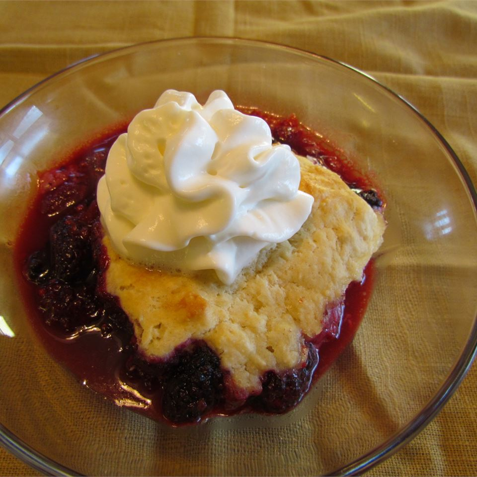

Traditional Blackberry Cobbler
Traditional Blackberry Cobbler

Per Serving: 322 calories; protein 5.1g; carbohydrates 58.3g; fat 8.7g; cholesterol 40.8mg; sodium 212.5mg.
This cobbler has a traditional drop-biscuit topping. You can substitute raspberries for half of the blackberries.
Ingredients!
- 2 pounds blackberries
- 1/ 1/4 cuos white sugar
- 1 1/2 tablespoons butter
- 1 1/2 cups all purpose flour
- 1 1/2 teaspoons baking powder
- 1/4 teaspoon salt
- 2 tablespoons white sugar
- 1/4 softened butter
- 2/3 cup milk
- 1 large egg, beaten
Steps!
- Preheat an oven to 400 degrees F (200 degrees C)
- Toss the blackberries with 1 1/4 cups sugar and 1 1/2 tablespoons flour in a mixing bowl. Spread into a 9x9-inch baking dish, and dot with 1 1/2 tablespoons of butter. In a separate bowl, whisk 1 1/2 cups flour together with baking powder, salt, and 2 tablespoons sugar. Cut in the softened butter until the mixture resembles cornmeal. Stir in the milk and egg until combined. Drop the batter over the berries by the spoonful.
- Bake in the preheated oven until the fruit is tender and the topping is golden brown, 20 to 30 minutes